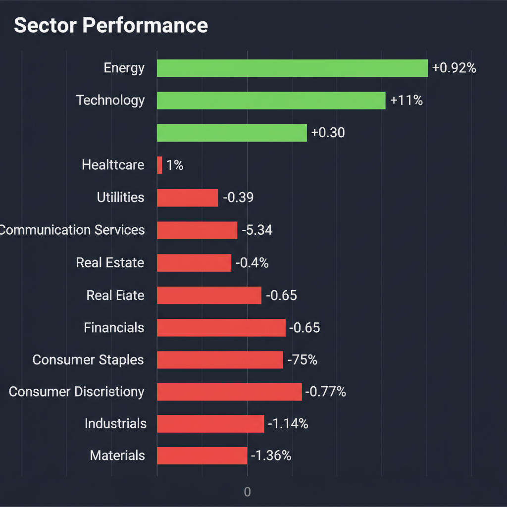
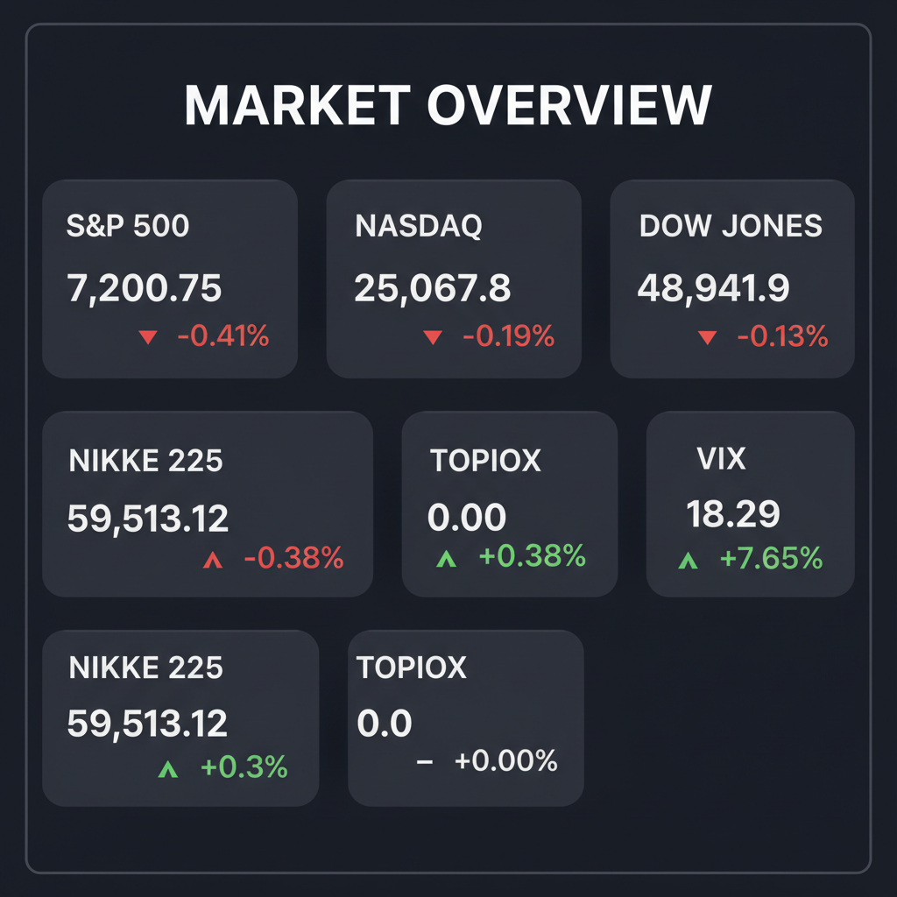

Daily Investment Report - 2026-05-05
Generated: 2026/5/5 7:29:46


投資チームミーティングでの各専門家による多角的な分析を踏まえ、投資家の皆様が即座にアクションを取れるよう整理した最終投資レポートをお届けします。
1. エグゼクティブサマリー
- イラン情勢の緊迫化と原油急騰（106ドル台）によりインフレ再燃と消費減退への懸念が高まり、米国市場はダウを中心にリスクオフの急落を見せています。
- VIX指数が18台へ急伸して警戒感が高まる中、資金は地政学ヘッジとしてのエネルギーや、実社会への実装フェーズに入ったAI関連の成長領域へ逃避しています。
- 全体相場が不安定な今こそ、価格転嫁力を持つ優良な中小型株や独自の成長ドライバーを持つ企業を拾い、ディスラプション（破壊的創造）に直面する旧産業を避ける選別投資が不可欠です。
2. 注目銘柄リスト
強気（買い推奨）
- Ichor Holdings（ICHR） [時価総額: 約10億ドル]: 半導体製造装置向けのガス供給システムを手掛ける裏方企業です。第1四半期決算の上振れにより半導体サイクルの底打ちが確認でき、AI投資再開の恩恵をダイレクトに受ける割安な銘柄です。
- Backblaze（BLZE） [時価総額: 5億ドル未満]: 大手クラウドの数分の一という破壊的価格でストレージを提供する「データ界のLCC」です。AIによるデータ爆発を追い風に、高い限界利益率で一気にFCF（フリーキャッシュフロー）を拡大させるポテンシャルを秘めています。
- GeneDx（WGS） [時価総額: 10億ドル未満]: 小児希少疾患などに特化したゲノム解析のパイオニアです。直近の決算が予想を下回ったにもかかわらず株価が上昇しており、スマートマネーが長期的なデータの独占的価値に賭けて流入している強いシグナルが点灯しています。
- EverQuote（EVER） [時価総額: 5億ドル前後]: オンライン保険マーケットプレイスを展開しています。保険業界のマーケティング予算回復により売上高が上振れており、プラットフォームビジネス特有の利益率急拡大が期待されます。
- 森永製菓（2201） [時価総額: 約1,400億円]: 大人向け「森永ラムネ」などの高付加価値化により粗利益率の改善を進めています。現在のインフレ環境下でも独自の需要開拓と価格転嫁を両立できる、下値リスクの限定的な優良日本株です。
中立（様子見）
- Palantir（PLTR） [時価総額: 約500億ドル]: 決算は好調でしたが株価の反応が鈍く、テクニカル的にも上値が重い展開です。バリュエーションの過熱感から「噂で買って事実で売る」動きになりやすく、エントリーは控えるべきです。
- エフピコ（7947） [時価総額: 約2,000億円強]: 食品トレー最大手として堅実ですが、原油106ドル台の急騰によるナフサ価格の上昇がコスト増に直結します。価格転嫁のタイムラグによる利益率圧迫を確認するまで静観が妥当です。
弱気（警戒）
- サンリオ（8136） [時価総額: 約2,500億円]: 役員の不適切報酬疑いにより決算発表が延期されました。重大なガバナンスリスクが生じており、全容解明と再発防止策が提示されるまでは、いかなる打診買いも避けるべきです。
- 物流・小売り関連銘柄 [時価総額: 中〜大型]: Amazonによる外部への物流網開放という強力な悪材料により、既存ビジネスモデルが根本から脅かされています。表面的な割安感に釣られるとバリュートラップに陥る危険性が極めて高いです。
3. セクター推奨ランキング
中東の武力衝突という地政学リスクに対する最も直接的なポートフォリオのヘッジ手段です。原油高による短期的な業績押し上げや、業界内のM&Aによる資本効率の改善が強力な追い風となっています。
- 2位：テクノロジーセクター（エンタープライズAIインフラ）
マクロ経済の悪化とは無縁の独自成長を続けています。Anthropicと金融大手がPE向けに15億ドルのベンチャーを設立したように、AIは単なる開発から「企業の生産性向上・コスト削減」のための実務インフラへと進化しており、資金流入が止まりません。
景気減速に対するディフェンシブな性質を持つと同時に、AI創薬やデータ解析の高度化により、機関投資家の死角で莫大なTAM（獲得可能市場規模）を狙う新興企業が台頭しています。
- 4位（アンダーウェイト）：運輸・物流・航空セクター
燃料コストの高止まりに加え、Spirit航空の破綻に見られる過剰債務リスクや、Amazonの参入によるプラットフォーマーのディスラプション（破壊）に晒されており、業界の構造的な淘汰が始まっています。
ガソリン価格の高騰が低〜中所得者層の可処分所得を直撃し、すでにレストラン売上の減少として実害が出ています。今後スタグフレーションが進行すれば、最も深刻な業績悪化に見舞われるセクターです。
4. 今週の注目イベント
- 5月7日頃：Devon EnergyとCoterra Energyの全株式交換による大型合併の完了見通し
- 近日中：トランプ大統領と習近平国家主席の首脳会談（中国へのイラン外交介入要請の行方）
- 随時：米国と湾岸アラブ諸国による国連での新たな決議案の策定動向
- 随時：サンリオの特別調査委員会による調査進捗および延期された決算の発表時期公表
5. リスク要因
- スタグフレーションと金利高止まりリスク：原油高によるインフレ再燃でFRBの利下げ期待が消滅し、資金調達コストの高騰が赤字の新興企業や過剰債務企業（ハイイールド債市場）の連鎖倒産を招く恐れがあります。
- ホルムズ海峡の完全封鎖リスク（ブラックスワン）：イランとの武力衝突が全面戦争に発展し海峡が封鎖されれば、原油価格は未知の領域（130〜150ドル）へ突入し、世界的なリセッションの引き金となります。
- VIX急伸によるパニック売りの連鎖：恐怖指数が心理的節目の20を突破した場合、アルゴリズム取引による機械的な売りプログラムが一斉に発動し、相場全体がメルトダウンする危険性があります。
- 為替介入による日本株急落リスク：157円台で激しく乱高下するドル円相場に対し、日本の通貨当局が大規模な為替介入を実施した場合、輸出関連銘柄を中心に日経平均が数円規模の円高ショックで急落するリスクが燻っています。
6. アクションアイテム
- ポートフォリオの防衛策を実行する：株式のロングポジションを縮小し、現金比率を最低でも30〜40%に引き上げ、突発的なマクロショックに備える。
- テールリスク・ヘッジを構築する：VIXのコールオプション購入や、S&P500インバース型ETF・プットオプションを活用し、相場全体の急落時でも資産を守る保険をかける。
- 消費・物流セクターから即座に資金を引き揚げる：ガソリン高で打撃を受ける一般消費財（外食・小売）や、構造破壊に直面している物流関連銘柄のポジションを清算する。
- エネルギー株をヘッジ目的で限定保有する：エネルギー関連株をポートフォリオの10%未満の範囲で順張りエントリーし、地政学リスクの保険とする（ただし、情勢緩和時の急反落リスクに備え、直近安値の3〜5%下に厳格なストップロスを設定する）。
- ノイズに隠れた中小型株の打診買いリストを作成する：ICHRやWGS、BLZEなど、マクロの逆風下でも明確な優位性を持つ（決算ミスでも買われる、FCF改善の兆しがある）時価総額の小さなイノベーターをリストアップし、相場のパニック売り局面で底値を探る準備をする。